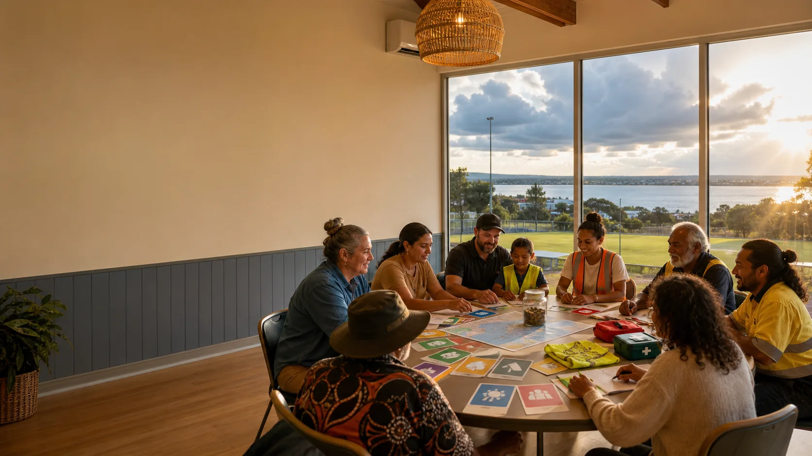

Insurance
An insurer makes a legal promise: if the policy says a covered thing happened, and the claim is valid, the insurer must pay. This is the strongest promise, and it is regulated heavily.

Mutual protection
A risk pool can help a community prepare for trouble, but the words matter because insurance law is serious.
Three words people mix up
An insurer makes a legal promise: if the policy says a covered thing happened, and the claim is valid, the insurer must pay. This is the strongest promise, and it is regulated heavily.
A discretionary mutual fund is a member pool that can consider paying a claim. It is insurance-like, but the fund keeps a choice. Plain analogy: it is a shared umbrella circle, not a guaranteed raincoat contract.
This is a formal legal permission for a big organisation to cover certain risks itself, such as workers compensation. In Queensland it usually needs thousands of full-time workers, so it is not a tiny community shortcut.
For this project, the safe everyday phrase is "mutual protection" or "community rainy-day pool". The phrase "self-insurance" belongs on the legal workbench until qualified people say exactly what is allowed.
Where it could start
Professional layer
A real mutual risk branch would need qualified managers, clean accounting, claims rules, privacy rules, complaints handling, insurance advice, and maybe an Australian Financial Services Licence. That licence is permission to provide certain financial services.
Volunteers can help with welcomes, checklists, event notes, safety culture, and community learning.
Legal promises, claims decisions, financial advice, and regulatory duties belong with people who are authorised and accountable.
C-Hour caution
A Community-Hour, or C-Hour, can be imagined as a record of one hour of verified community or ecological work. But if it starts looking like pay, wages, investment, money, or a tradeable digital token, different tax, employment, financial services, and digital asset laws may switch on.
That does not kill the idea. It means the first version should be framed as learning, gratitude, record-keeping, and community recognition until proper advice says more.